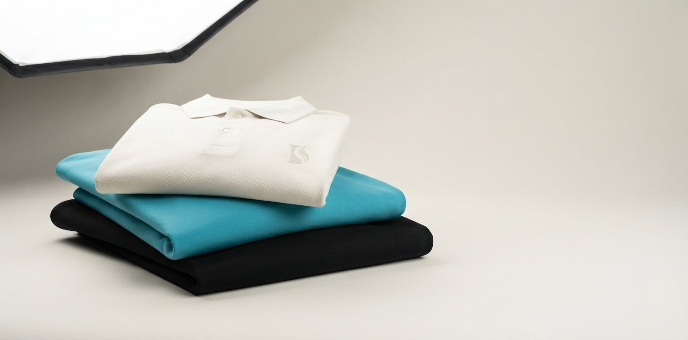
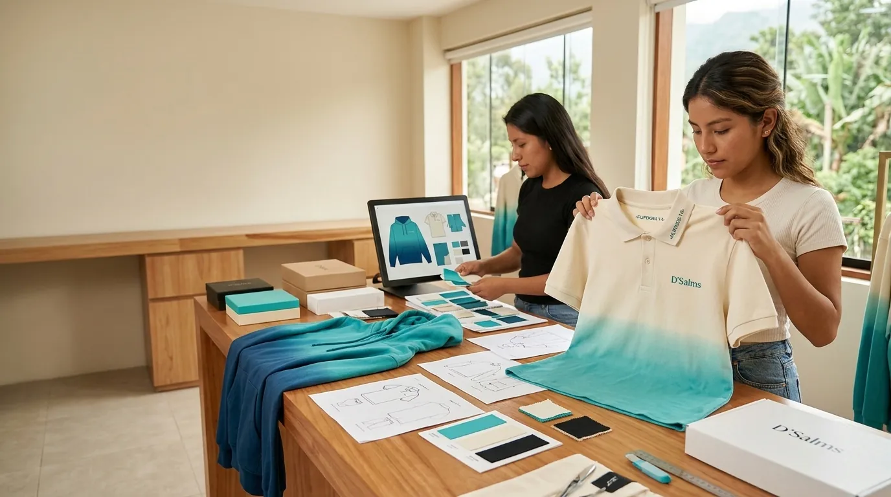
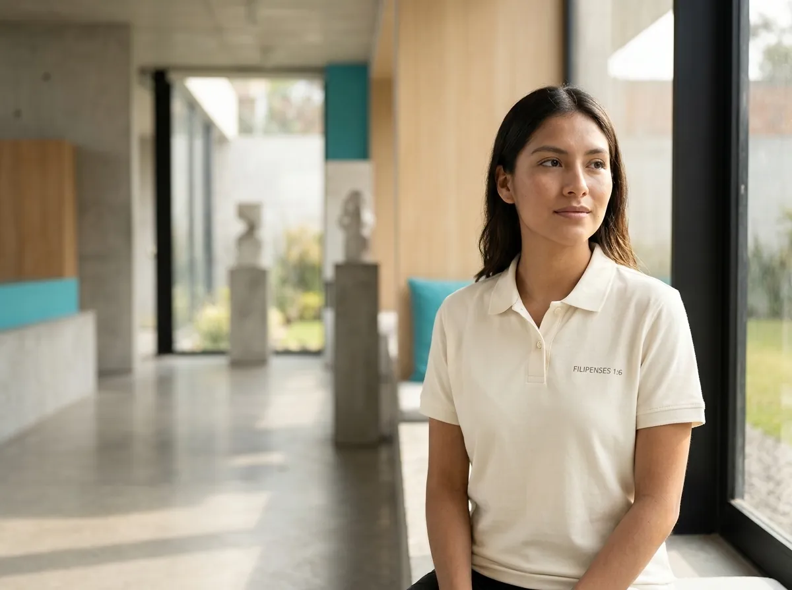
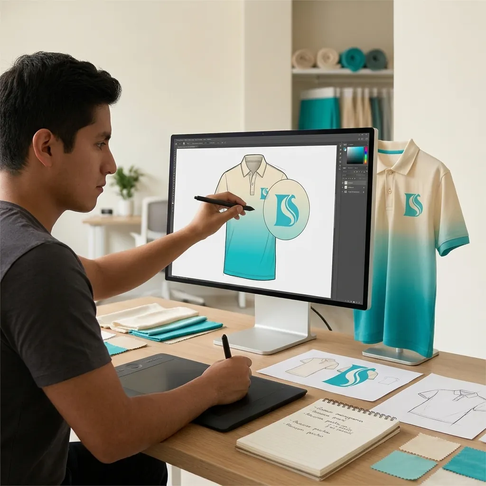
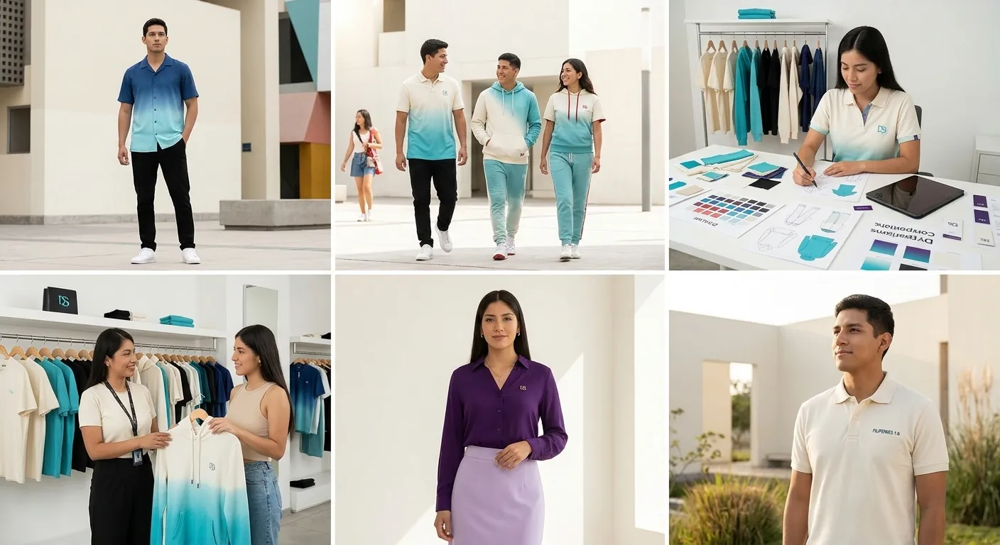
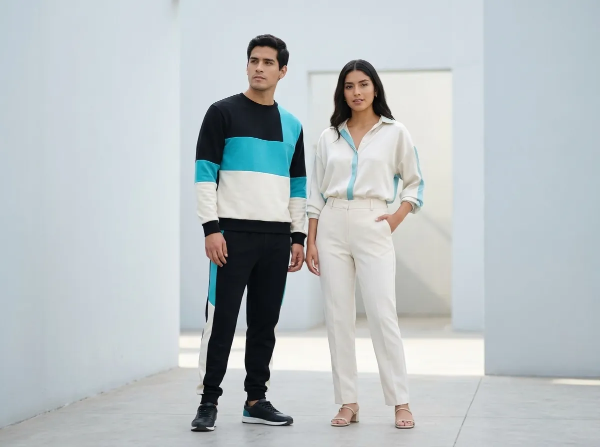
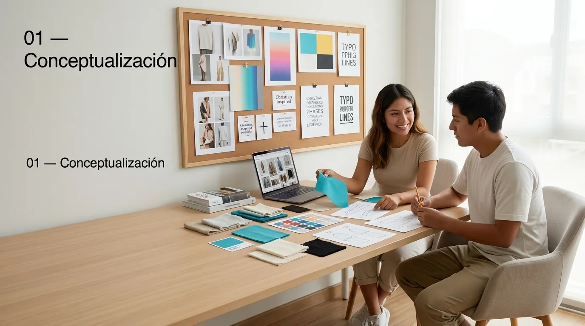
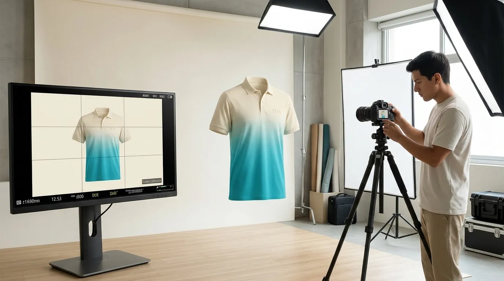

Misión
Ofrecer prendas de calidad que combinen un estilo moderno con mensajes inspirados en la fe cristiana, para que los clientes expresen sus creencias e identidad a través de la moda.
01 · ¿Quiénes somos?
D'Salms combina moda, creatividad, identidad y fe, y se aleja de la estética tradicional de algunas marcas de ropa cristiana.

Ofrecer prendas de calidad que combinen un estilo moderno con mensajes inspirados en la fe cristiana, para que los clientes expresen sus creencias e identidad a través de la moda.
Ser una marca reconocida en Pichanaqui y progresivamente en otras ciudades del Perú por su ropa cristiana moderna, creativa y de calidad para el 2028.
Elige un valor: verás cómo se dará a conocer y qué queremos que piense el cliente.
MODA + FE + IDENTIDAD + CREATIVIDAD: cuatro ideas que se refuerzan entre sí. Pasa el cursor o usa el teclado sobre cada una.












UNIVERSO CREATIVO / ARCHIVO 2026
Fotografías, diseño y aplicaciones originales del universo visual de D’Salms.